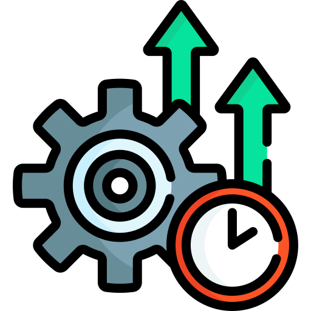

Plataforma
Explora los módulos principales
01 — Solución


IA + Satelital
Monitoreo en tiempo real con imágenes satelitales e inteligencia artificial para optimizar cada parcela.
Explorar → 02 — ImpactoResultados medibles
Datos reales de mejora en productividad, reducción de pérdidas y crecimiento económico para el agricultor.
Explorar → 03 — Prototipo
Demo interactiva
Navega el dashboard funcional y experimenta la plataforma como lo haría un agricultor real.
Explorar →